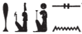

Esna II, 75
- Location: North Anta, base
- Date: Unknown, probably Domitian
- Hieroglyphic Text
- Bibliography: Klotz (2014), p. 41, No. 7 (excerpt).
Title
s.t tn n nṯr.t
pḏ-nmṯ.t ḥr sỉn=s (?)
(w)ḏ(ȝ)=s wḏȝ tȝ
ḥw.t-Nt pw snḏm=s ỉm=s
ḥr sʿnḫ ṯȝ.wy n zȝ=s
mr.t n Mnḥy.t
nfr.t n Nb.t-ww
pr-ḥʿʿ n ḥkȝ-pȝ-ẖrd […]
[…]
[snsn ḥm=sn] ỉm r nḥḥ
bw sḏm spr.w
[…]
[dỉ zȝ] zȝ.t
n šm-ḥr-mw=f
snỉ=s r gb.t
ẖr ỉtn.wy
This place of the goddess,
broad of step while hurrying,
if she is well, the land is well(?)10
That is, the Temple of Neith, in which she sits,
nourishing the children of her son.
The desert (mr.t) of Menhyt,11
the good (place) (nfr.t) of Nebtuu,
the House of Rejoicing (pr-ḥʿʿ) of Heka the child,
[…]
[their majesties]12 consort there eternally.
It is the place of hearing requests
[of Khnum?…]
[who gives a son]13 and daughter
to whomever is loyal to him.
It resembles14 the heaven
bearing the two celestial disks.15
pḏ-nmṯ.t ḥr sỉn=s (?)
(w)ḏ(ȝ)=s wḏȝ tȝ
ḥw.t-Nt pw snḏm=s ỉm=s
ḥr sʿnḫ ṯȝ.wy n zȝ=s
mr.t n Mnḥy.t
nfr.t n Nb.t-ww
pr-ḥʿʿ n ḥkȝ-pȝ-ẖrd […]
[…]
[snsn ḥm=sn] ỉm r nḥḥ
bw sḏm spr.w
[…]
[dỉ zȝ] zȝ.t
n šm-ḥr-mw=f
snỉ=s r gb.t
ẖr ỉtn.wy
This place of the goddess,
broad of step while hurrying,
if she is well, the land is well(?)10
That is, the Temple of Neith, in which she sits,
nourishing the children of her son.
The desert (mr.t) of Menhyt,11
the good (place) (nfr.t) of Nebtuu,
the House of Rejoicing (pr-ḥʿʿ) of Heka the child,
[…]
[their majesties]12 consort there eternally.
It is the place of hearing requests
[of Khnum?…]
[who gives a son]13 and daughter
to whomever is loyal to him.
It resembles14 the heaven
bearing the two celestial disks.15
. Reading uncertain. The initial epithet seems likely, assuming the first sign writes pḏ, “to stretch out (wings)” (Wb I, 568, 2).↩
A desert region (mr.t) of Esna is mentioned on the funerary pOIC 25389 (35, 8) belonging to a Latopolite priest: Herbin (1994), p. 273.↩
That is, Shu and Tefnut: ↩
Restoration suggested by Sauneron. For similar epithets, see Klotz (2014), pp. 38-39, n. c.↩
Note the spelling of the preposition r (< ỉȝ.t): . Not mentioned by Kurth, EP I, p. 323, No. 68.↩
That is, sun and moon, as evident from the determinatives: ↩